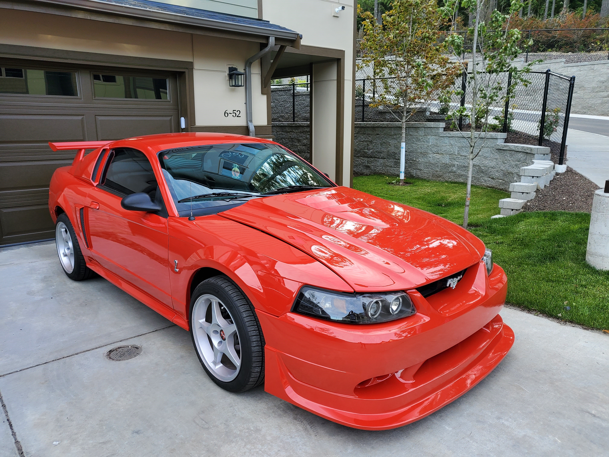
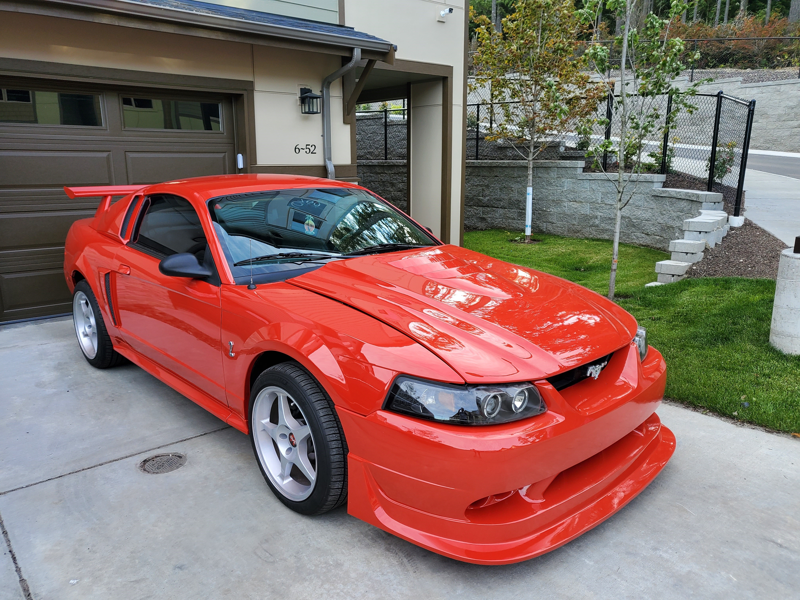

Hi my name is Zoe, I love space, animation, and now coding! A few things about me? Oh well I am 22 years old. My favorite band is Motion City Soundtrack and my favorite song by them is "Floating down the river." (super existential song) I hope one day to be a software engineer for NASA that's my dream! I've been drawing for years and someone one day recommended animation so now I make animations for fun! I once got featured on the Powerwash Simulator game's twitter which was nice. I've swam in the middle of the pacific ocean off of a submarine... I was super scared. I love my 2002 Mustang which is my pride and joy. I love to make friends and meet new people! I hope one day to meet an astronaut!
I hope to one day see myself as a successful software developer..... but a lead engineer on an Aerospace project is my aspiration. I want to leave an impact beyond this world.. because everything is finite.